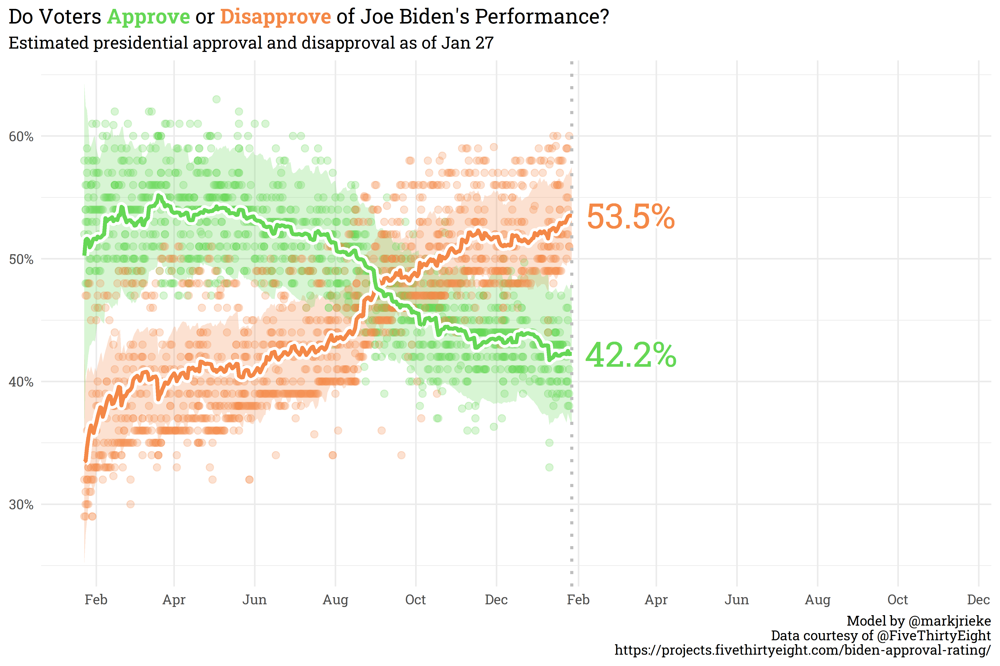
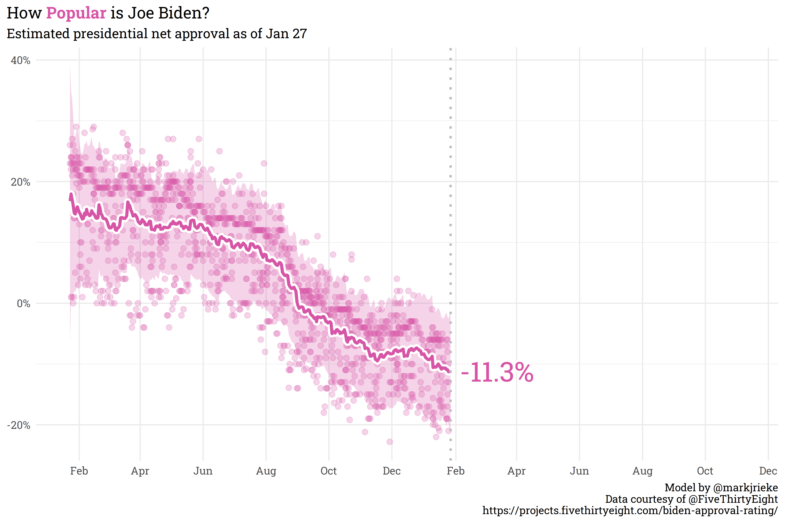
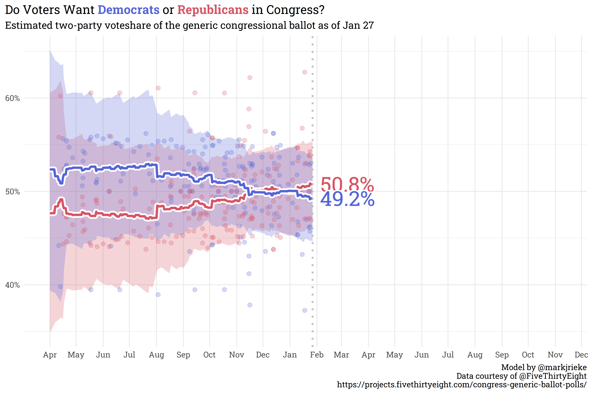

While the sitting president’s party tends to House lose seats in the midterm elections, the president’s approval rating can help inform us of the magnitude of that loss. In general, the more unpopular the president, the more seats his party tends to lose. As a part of my long-term goal of building a midterm election model, I put together a model for estimating Biden’s approval, disapproval, and net approval based on polls collected by FiveThirtyEight.
The methodology to build the approval model is very similar to the Generic Congressional Ballot model — both weight polls by recency, sample size, methodology, pollster, and survey population — so I won’t rehash the details again. If you’re so inclined, you can read the methodology from the previous post or explore the script, but we’ll keep this short and sweet and just explore the results!


As of today, Joe Biden’s job approval is fairly underwater — and history says it’s unlikely to improve as the midterms approach. Interestingly, the generic congressional ballot still shows that the country is about even-split on who they’d like to see in congress. As with the president’s approval, however, historical precedent implies a continuous slide away from the president’s party.

Despite this precedent, politics today are far more polarized than previous midterm cycles, and modeling that adjusts for this partisanship may imply a lesser midterm shellacking than history would otherwise suggest. While Biden would certainly prefer for his approval to be higher, it may not necessarily spell doom for democrats in the midterms (though, to be sure, the strong prior still that they will lose ground this cycle — the question now is how much).